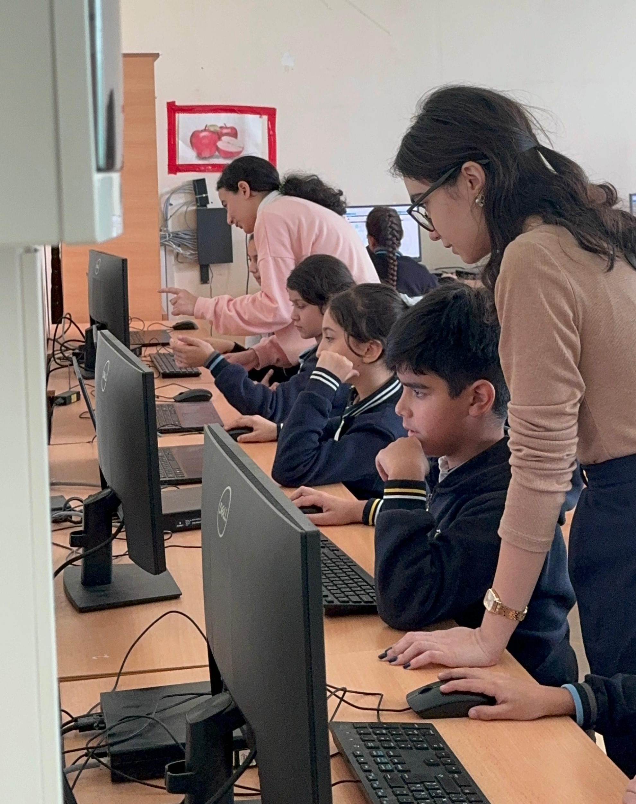
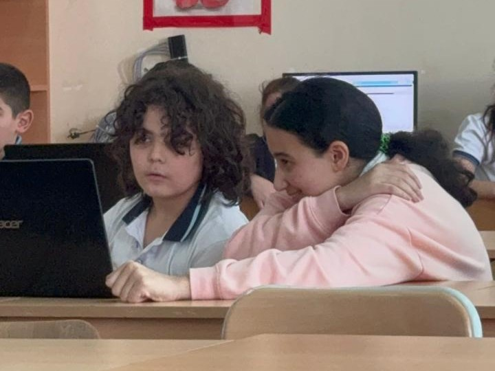
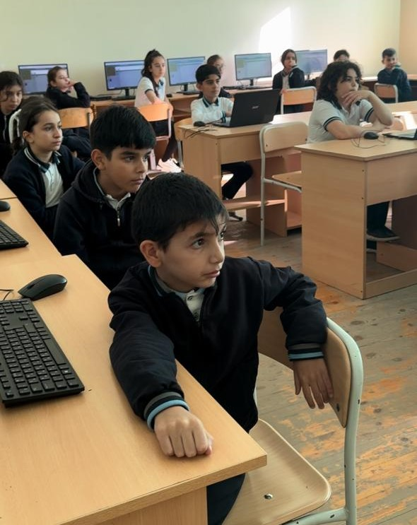
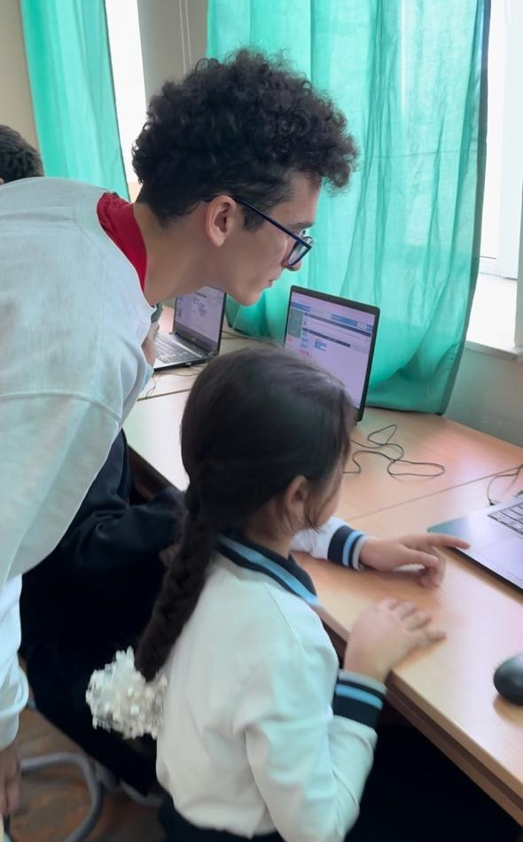
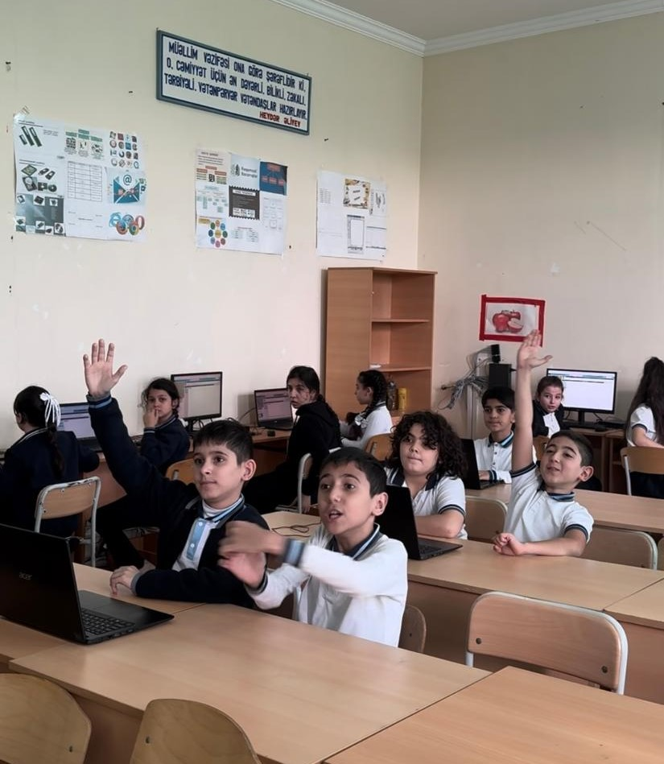
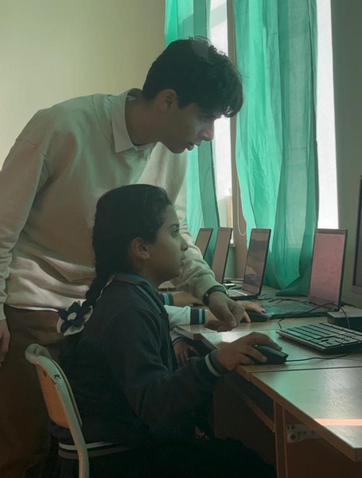

Our hour of code event

Do you know what Hour of Code is?
The Hour of Code started in December 2013.It is a one hour introduction to computer science education, coding,
programming, etc.
By allowing students to learn the basics, they can begin to understand
and get excited about the field of computer science.
Guess what?
Our team successfully hosted an Hour of Code event of our own!

Here is our Hour of Code's details:
- Place: Secondary School No. 215
- Date: November 5, 2024
- Time: 14:00-15:00
- Number of students: 22
Introduction
Our Hour of Code event was held in Secondary School No. 215, former school,
with the aim to introduce 5th-grade students to computer science by using the "Classic Maze puzzle."
Much preparation was done by our team: setting up computers in Azerbaijani and rehearsing presentations for effective communication.
Student Engagement and Challenges
This event was the students’ first experience with coding activities, as such lessons were not part of their regular curriculum.
The students enjoyed the session and expressed their gratitude. Many participated actively, with some finishing the tasks early, while
others required assistance but ultimately completed the course. Some students did not need any kind of assistance during the first tasks,
which were very challenging for those who have not even faced what a program coding is, demonstrating a remarkable talent. However, we faced
certain challenges: such as managing the students' excitement, which made it difficult to explain the rules; scheduling our time, as we tried
making sure that all the children understood and completed the puzzles; and student progress, balancing attention between advanced participants
and those needing extra help at the same pace. Additionally, one student named Habiba faced teasing from classmates about her name, which was worrisome.
But we were successfully able to resolve the situation by asking apologies from both sides and by giving reassurance, ensuring a positive environment for everyone.
To lighten the atmosphere, we began distributing the certificates, which brought a smile to everyone's face.




Conclusion
Despite initial challenges, the Hour of Code event was a success. The students’ enthusiasm and the support from the
school made the experience enjoyable and rewarding for everyone. It was not only an educational event but also a beautiful
memory that will be remembered. At the end, we asked the class whether they liked this event or not, and they responded with a collective “yes.”
Even after the event, we witnessed some students willingly approaching us to thank and hug us, which was adorable. That flattered us, and we were very glad that
we were able to complete the task successfully and teach the kids in an enjoyable way.
We then, finally, came back to university with bright smiles.
A special Thank You!
We would like to express our gratitude to Baku Secondary School No. 215 for their support and for allowing us to host our Hour of Code event at their school.
Not only did they permit us to organize the event, but they also supplied essential equipment: including computers, strong Wi-Fi, a projector, and a smartboard.
Additionally, they were always close to the classroom, checking if we were comfortable and if we had everything we needed during the event.
We truly appreciate all the assistance they provided!